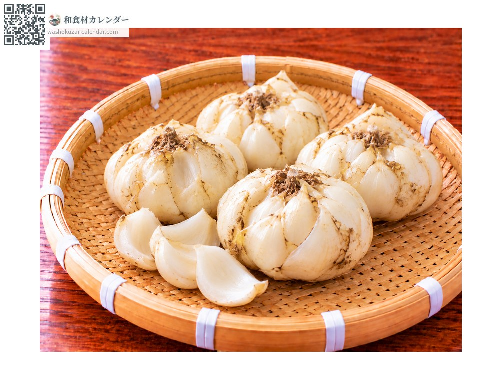
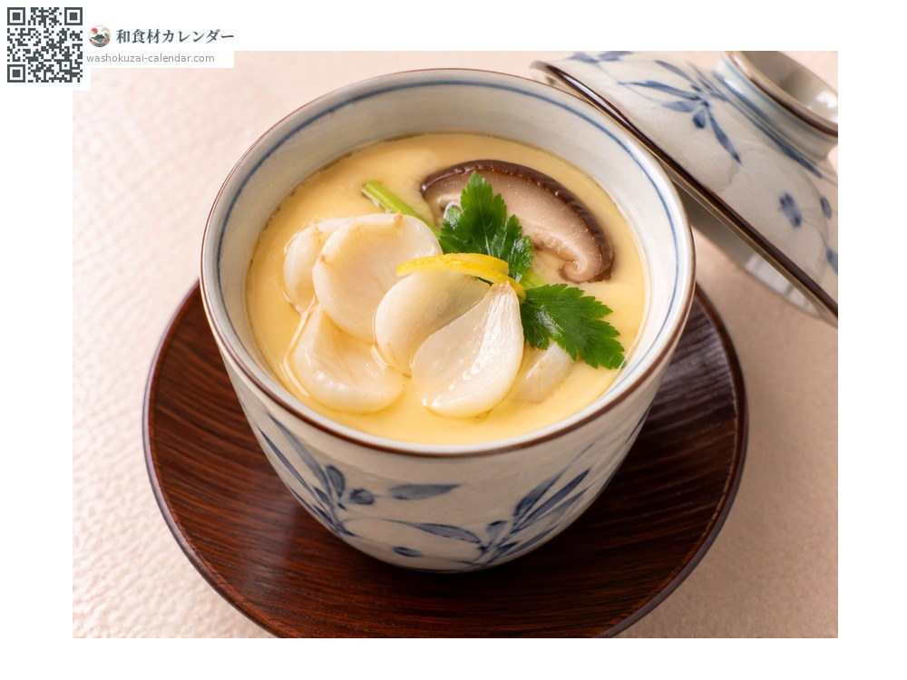
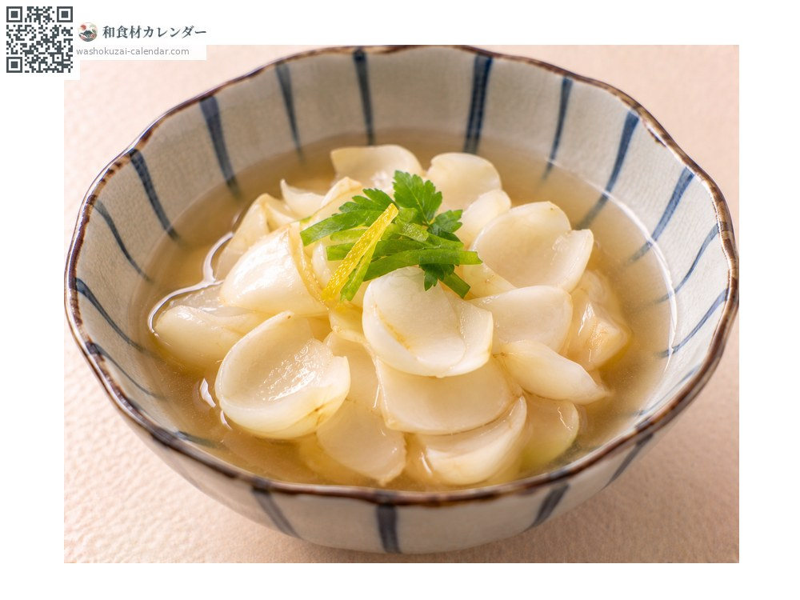
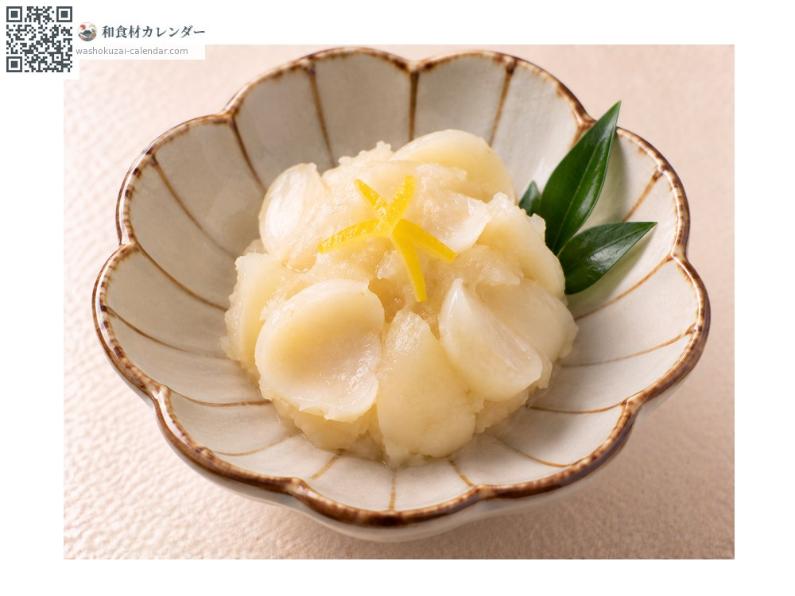
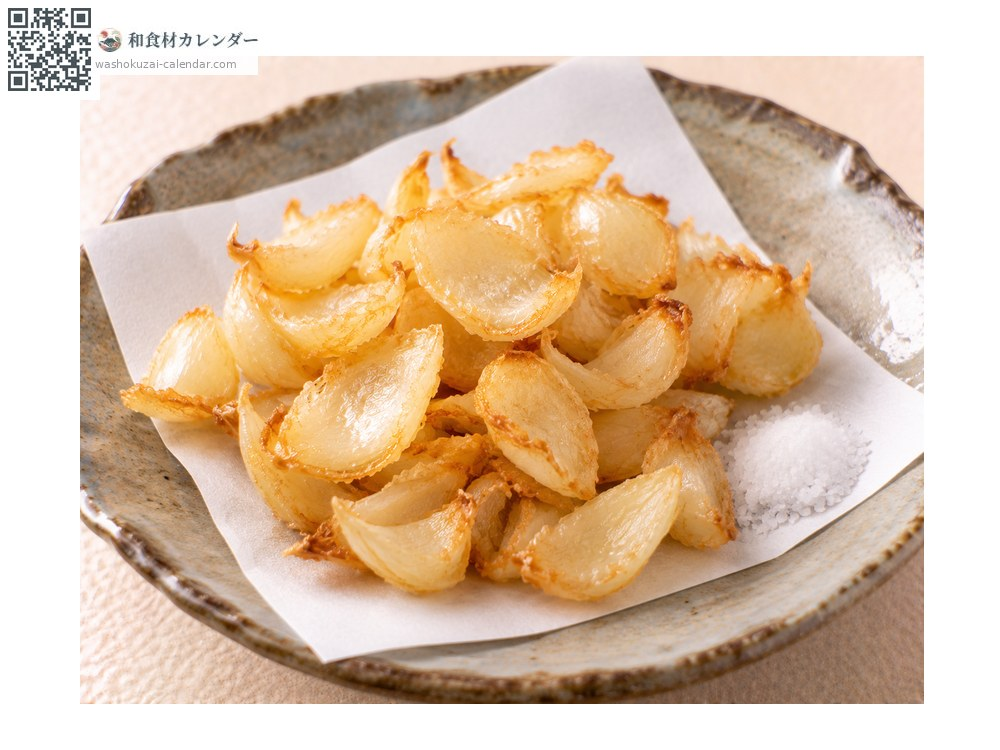

蔬菜
百合根
百合根 ゆりね yurine
別名yurine
當令時期為1月、2月、11月、12月

當令時期
1月
2月
3月
4月
5月
6月
7月
8月
9月
10月
11月
12月
當令有供應
料理方式

茶碗蒸
一片片剝開後加進去，口感鬆軟。

含煮
以高湯靜靜地燉，甜味會更突出。

金團
過篩後加糖拌炒，用於過年料理。

素炸
快速油炸後撒鹽，會變得香酥。
挑選方式
鱗片白而厚實、緊緊包覆。附有木屑包裝的比較好。
保存方式
連同木屑放在陰涼暗處。不耐乾燥，用報紙包好。
主要產地
小知識
可食用的是卷丹百合等品種的球根。從種球到出貨需要約六年，是相當費工的作物，九成以上產自北海道。重點是不要加熱過久，否則會出現苦味。